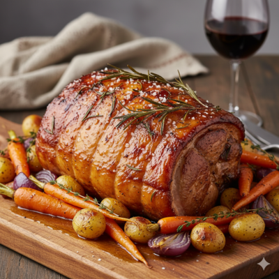

Lombo de porco assado
Ingredientes (8 porções)
- 1,5 kg de lombo de porco
- 1 cebola média, em pedaços
- 1 1/2 colher de chá de sal
- 2 colheres de sopa de suco de limão
- 1/4 de xícara de azeite
- 4 dentes de alho
- 4 folhas de louro
Utensílios
- Assadeira
- Liquitificador
- Colher de Pau
- Copo Medidor
- Espatula
Modo de preparo
Modo de preparo : 45min
- Faça vários furos na carne e reserve.
- Bata os temperos no liqüidificador e passe no lombo essa mistura.
- Coloque em uma assadeira, cubra com papel alumínio e leve ao forno pré-aquecido, a 200º, por 30 minutos.
- Enquanto a carne assa, adicione 1/2 xícara de água para criar um pouco de caldo.
- Fure com uma faca, se estiver cozida, não escorrerá líquido e a faca deslizará bem.
- Retire o papel alumínio, vire o lombo e asse até dourar, sempre acrescentando água à medida que for secando. Corte em fatias e sirva com o caldo da assadeira.